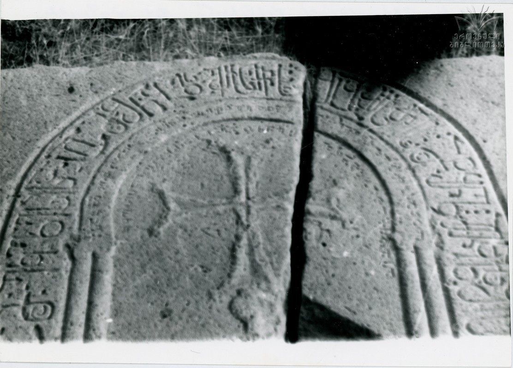

პატარა სმადის ერისთავ შაბურისძისა და შიო მაწყვერელი მთავარეპისკოპოსის წარწერა
შინაარსი / Summary
საამშენებლო Building
ბიბლიოგრაფია Bibliography
კრიტიკული გამოცემა Interpretive Edition
ქრ(ო)ნ(იკონ)ს რმიე
ამა ეკლესი(ი)სა აღმშ(ე)ნ(ე)ბ(ე)ლს ერ(ი)სთ(ა)ვსაშაბო(ჳ)რ(ი)სძეს მ(ა)წყ(უე)რ(ე)ლ მთ(ავარების)კ(ობო)ზს შიოს
და მშობელთა მ(ი)სთა შ(ეუნდვე)
ღ(მერთმა)ნ
დიპლომატიური გამოცემა Diplomatic Edition
ႵႰႬႱ ႰႫႨႤ
ႠႫႠ ႤႩႪႤႱႨႱႠ ႠႶႫႸႬႡႪႱ ႤႰႱႧႥႱႠႸႠႡႭႰႱႻႤႱ ႫႼႷႰႪ ႫႧႩႦႱ ႸႨႭႱ
ႣႠ ႫႸႭႡႤႪႧႠ ႫႱႧႠ Ⴘ
ႶႬ

პატარა სმადის ერისთავ შაბურისძისა და შიო მაწყვერელი მთავარეპისკოპოსის წარწერა
{'default': 'ქრონიკონი რმიე, ამ ეკლესიის ამშენებელს, ერისთავ შაბურისძეს, მაწყუერელ ეპისკოპოს შიოს და მათ მშობლებს შეუნდოს ღმერთმა.'}
{'default': 'პატარა სმადის ეკლესიის ყოფილ არქიტრავზე ამოკვეთილია ორი წარწერა: პირველი მოსახსენებელია - „ამა ეკლესიის აღმშენებელთა“ ერისთავის შაბურისძისა\n და მაწყვერელ მთავარეპისკოპოს შიოსი. ამ წარწერის ტექსტის ნაწილია თარიღის აღმნიშვნელი „ქრონიკონს რმიე“ (155+1312=1467 წელი), ამოკვეთილი\n ნახევარწრიულად განლაგებული წარწერის ტექსტის მარცხენა მხარეს, ოღონდ განივად, ჰორიზონტალურად. მეორე წარწერა, ასევე, ცალკე, დამოუკიდებელი ტექსტია და\n მასში აღნიშნულია, რომ „აღეშენა ესე წმიდაჲ ეკლესიაჲ იოვანე მაწყუერელ ებისკობოზისა ცალკუესისა ზეობასა“. მაშასადამე, ეკლესიის აღმშენებელნი\n ყოფილან, ერთი მხრივ, შიო მაწყვერელი და ერისთავი შაბურისძე, ხოლო მეორე მხრივ - იოვანე მაწყუერელი ცულკუესი. ვალერი სილოგავა გამოთქვამს\n ვარაუდს, რომ „ცულკუესი“ შეიძლება იყოს დაკავშირებული იოვანე მაწყვერელის საერო ცხოვრების პერიოდთან, როდესაც მას ამ სახელით უფრო იცნობდნენ.\n ასევე, ცოტა გაუგებარია მაშენებელთა ორი ჯგუფის დასახელება (მეორეში მხოლოდ ერთი პირია - იოვანე მაწყვერელი), რაც შეიძლება ეკლესიის მშენებლობის\n ორ პერიოდს ასახავდეს ორი სხვადასხვა მაწყვერელი მღვდელმთავრის დროს.'}
<div type="edition" xml:lang="ka" ana="mtavruli" xml:space="preserve">
<ab>
<lb n="1"/><w lemma="ქრისტე"><expan><abbr>ქ</abbr><ex>რისტ</ex><abbr>ე</abbr></expan></w>
<w lemma="განსუენება"><expan><abbr>გა</abbr><ex>ნ</ex><abbr>ო</abbr><ex>ჳ</ex><abbr>ს</abbr><ex>უ</ex><abbr>ენე</abbr></expan></w>
<w lemma="სულ">სოჳ<lb n="2" break="no"/>ლსა</w>
<name nymRef="ვაჩა">ვაჩაჲს<lb n="3" break="no"/>ასა</name>
<name nymRef="გურა"><expan><abbr>გო</abbr><ex>ჳ</ex><abbr>რაჲ<lb n="4" break="no"/>სასა</abbr></expan></name>
<name nymRef="მირა"><expan><abbr>მ</abbr><ex>ი</ex><abbr>რა</abbr><ex>ჲ</ex><abbr>ს</abbr><ex>ა</ex><abbr>ს</abbr><ex>ა</ex></expan></name>
</ab>
</div>